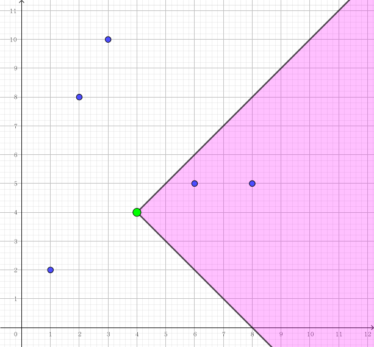

你有一个盘子，时刻 $0$ 时你可以把盘子放到数轴上的任何一个整数坐标处，接着每一时刻你可以把盘子往左移动一个单位、往右移动一个单位或者不动。接着系统生成了 $n$ 个水果，第 $i$ 个水果会在第 $b_i$ 时刻出现在 $a_i$ 坐标处，保证 $b_i$ 单调递增。如果你的盘子在 $b_i$ 时刻恰好出现在 $a_i$ 处，那么就能接到这个水果。
最后一个水果落下后，游戏结束。分数用这个方式计算，定义变量 $K$，最开始 $K$ 是 $0$，按照顺序考虑每一个水果，如果你接到了当前水果，那么把 $K$ 加一，否则你的得分将加上 $K^2$ 并将 $K$ 清零，游戏结束后你的得分还会加上游戏结束时的 $K^2$。即你的得分是每一段连续接到水果的极长区间的长度平方和。
"当然，我们可以非常容易的算出来理论的最高分是****。" 出乎意料地，AcrossTheSky 居然一下子就说出了答案。
了解 AcrossTheSky 真实智力的你觉得这非常反常，你有理由怀疑 AcrossTheSky 是随便报了一个数字出来。所以你决定亲自计算一下答案，来检验一下 AcrossTheSky 是不是在瞎 BB。
第一行包含一个正整数 $n$ ($n \leq 5 \times 10^5$)，表示水果的个数。
接下来 $n$ 行，第 $i$ 行包含两个空格分隔的正整数 $a_i, b_i$ ($1 \leq a_i, b_i \leq 10^9$)，表示第 $i$ 个水果会在第 $b_i$ 时刻出现在 $a_i$ 坐标处，保证 $b_i$ 单调递增。
输出一行一个整数，表示这场赛事中双方可以拿到的最高分。
先来寻找接到水果 $i$ 后又可以接到水果的 $j$ 的条件。
设水果 $i$ 的参数 (时间，位置) 为 $(b_i, a_i)$，水果 $j$ 的参数为 $(b_j, a_j)$ ($b_i < b_j$)，则它们能接到当且仅当 $\left| a_j - a_i \right| \leq b_j - b_i$。
直观一点，如果将一个水果看作平面上点的坐标 $(b_i, a_i)$，则接住它后能接到的水果在以它为顶点的一个直角区域中 (其中两条射线的斜率分别为 $\pm 1$)：
因此我们可以作一个坐标变换 (旋转 + 伸缩) $(b_i, a_i) \Rightarrow \left( b_i - a_i, b_i + a_i \right) \xrightarrow {\mathrm{def}} \left( x_i, y_i \right)$，这样，接到水果 $i$ 后可以接到 $j$ 的条件就转化为了 $x_j \geq x_i \wedge y_j \geq y_i$，即一个二维偏序。我们把这个条件简记为 $i \prec j$。
接下来，对于 $i$ 和 $i + 1$，如果 $i \prec i + 1$，我们将它归为同一段中。
然后考虑如何计算答案。容易建立一个 DP 模型，即用 $f_i$ 表示最后一个接到的水果为 $i$ 时所能获得的最大得分，则有两种转移：
这样使用第二种转移就可以避免多一维状态保存当前的极长区间长度。
由于第一种转移是一个二维偏序，或者说最长单调子序列，因此可以使用树状数组等 $O \left (n \log n \right)$ 算法 (排序后二分在这里可能不适宜)。
具体地，将所有点按照纵坐标 $y_i$ 排序，然后将 $x_i$ 离散化，然后树状数组的位置 $h$ 储存 $x_i \leq h$ 时的 $f_i$ 的最大值。
接下来考虑第二种转移。
首先撇去下面这个 "$j$ 与 $i$ 在同一段" 这个奇葩条件，剩下的你们是不是都能看出来啊？
是啊，这是个带平方项的式子，因此按照套路是可以进行斜率优化的！
类似地，我们来寻找对于 $0 \leq j < k < i$，$k$ 的决策比 $j$ 优的条件，即 (注意是 $\max$，所以是 $<$ 号)
\begin{align*} & f_j - 1 + (j - i + 1)^2 < f_k - 1 + (k - i + 1)^2 \\ \Rightarrow & f_j + j^2 - 2(i+1) j < f_k + k^2 - 2(i+1) k \\ \Rightarrow & \frac {\left( f_j + j^2 \right) - \left( f_k + k^2 \right)} {j - k} > 2i + 2 \end{align*}
记 $s_j = f_j + j^2$，则就变成了 $\dfrac {s_j - s_k} {j - k} > 2 i + 2$。
即斜率值要大于一个已知值，且已知值单调增。
因此，这回我们需要维护的是上凸包而不再是下凸包。但由于右端已知值单调增，因此斜率会越来越大，因此，删掉的点反而是后面的点。也就是说，我们需要用栈而不是双向队列来维护凸包。
那现在多了 "$j$ 与 $i$ 在同一段" 这个条件后，该怎么办呢？
其实是一样的。首先容易发现，各个段之间的转移是独立的，不会出现一个值在多个段中交叉转移。
其次，段中的元素 $a_1, a_2, \cdots, a_n$ 满足 $a_1 \prec a_2 \prec \cdots \prec a_n$，因此对所有点按照纵坐标 $y_i$ 排序后它们之间的相对顺序是不变的，只是多个段之间的转移会同时、独立地进行。因此我们只需用多个栈来维护这个过程即可。
具体实现的时候，可以对每一个点记录一个前趋节点 (链表思想)，这样就不用实际地开很多栈了。
最后的答案即为所有 $f_i$ 的最大值。总时间复杂度 $O \left( n \log n \right)$。
#include <bits/stdc++.h>
#define N 500005
#define lowbit(x) (x & -x)
typedef long long ll;
typedef std::pair <int, int> pr;
struct fruit {
int x, y;
fruit * read() {
int tim, val; scanf("%d%d", &val, &tim);
return x = tim - val, y = tim + val, this;
}
inline bool operator < (const fruit &B) const {return y < B.y || (y == B.y && x < B.x);}
inline bool operator << (const fruit &B) const {return x <= B.x && y <= B.y;}
} a[N];
bool cont[N];
int n, z;
int ord[N], la[N];
ll bit[N], f[N], y[N];
inline bool cmp(const int x, const int y) {return a[x] < a[y];}
inline void up(ll &x, const ll y) {x < y ? x = y : 0;}
void adj(int h, ll v) {for (; h <= z; h += lowbit(h)) up(bit[h], v);}
ll pre(int h) {ll s = 0; for (; h; h -= lowbit(h)) up(s, bit[h]); return s;}
namespace DC {
int F[N]; pr D[N];
int Discretize(int n) {
int i, cnt = 0;
std::sort(D, D + n);
for (i = 0; i < n; ++i)
F[D[i].second] = (i && D[i].first == D[i - 1].first ? cnt - 1 : (D[cnt] = D[i], cnt++));
return cnt;
}
}
inline bool test1(int u, int v, ll para) {return y[u] - y[v] < para * (u - v);}
inline bool test2(int u, int v, int w) {return (y[v] - y[w]) * (u - v) <= (y[u] - y[v]) * (v - w);}
int main() {
int i, j, _i; ll ans = 0;
scanf("%d", &n);
for (i = 1; i <= n; ++i) a[i].read();
for (i = 2; i <= n; ++i) cont[i] = a[i - 1] << a[i];
for (i = 1; i <= n; ++i) DC::D[i - 1] = pr(a[i].x, i - 1);
z = DC::Discretize(n);
for (i = 1; i <= n; ++i) a[i].x = DC::F[i - 1] + 1, ord[i] = i;
std::sort(ord + 1, ord + (n + 1), cmp);
for (_i = 1; _i <= n; ++_i) {
i = ord[_i]; f[i] = pre(a[i].x) + 1; y[i] = f[i] + (ll)i * i;
if (cont[i]) {
for (j = i - 1; la[j] && test1(j, la[j], (i + 1) * 2); j = la[j]);
up(f[i], y[j] - 2ll * (i + 1) * j + i * (i + 2ll));
for (; la[j] && test2(i, j, la[j]); j = la[j]);
la[i] = j;
}
adj(a[i].x, f[i]); up(ans, f[i]);
}
printf("%lld\n", ans);
return 0;
}
坑1：注意在计算斜率是使用 long long。
坑2：由于 $a_i, b_i \leq 10^9$，因此在使用树状数组前不要忘记离散化。